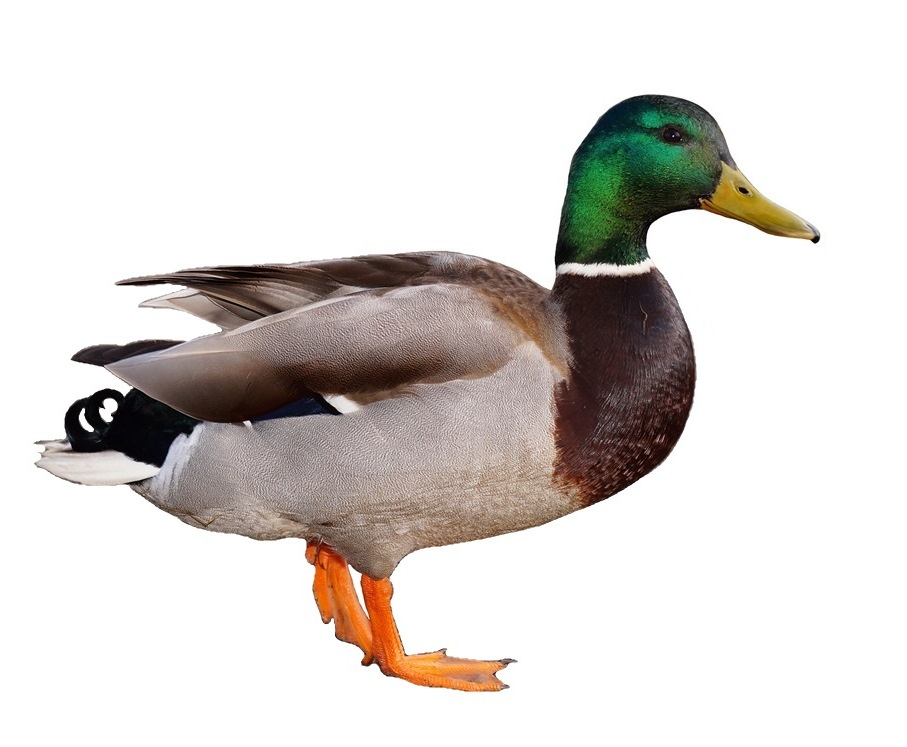

# Level 1 header
## Level 2 header
### Level 3 header3 Worked examples for Quarto and booktem features
As you work on your own book, you might find the following features useful for inspiration.
3.1 Quarto guide
To check different features of Quarto, you can see an extensive user guide online.
3.2 Worked examples
If you look through these books for inspiration, you can check the code to see how they do it.
Dr Wil Toivo and I are rewriting the Fundamentals of Quantitative Analysis book and you can see our github repository.
You can also see the Applied Data Skills book developed by Dr Emily Nordmann and Prof Lisa DeBruine, along with their github repository.
3.3 Useful features
3.3.1 Markdown
Quarto still uses Markdown for formatting, so you can see this part of the Quarto guide for Markdown Basics.
3.3.1.1 Headers
The book template table of contents goes by default to level 3 headers (but you can go to level 6 headers if you really want), so keep in mind what will be a logical nesting of headers, sub-headers etc. You add a hash for each level of header:
3.3.1.2 Text formatting
You make text italics by surrounding it with one star (*italics*), or bold by surrounding it with two stars (**bold**).
If you want to give text code formatting, you can add back ticks around it.
`example code`produces:
example code.
If you want to add bullet points, you can use - or *:
- Bullet point 1
- Bullet point 2
- Bullet point 3Bullet point 1
Bullet point 2
Bullet point 3
The same applies to numbered lists:
1. List 1
2. List 2
3. List 3List 1
List 2
List 3
Or even sub-lists with a little indent:
1. List 1
1. Sublist 1
2. Sublist 2
2. List 2List 1
Sublist 1
Sublist 2
List 2
3.3.1.3 Links
You can add hyperlinks with the form:
[hyperlinks](https://quarto.org/docs/authoring/markdown-basics.html#links-images)where the writing in square brackets is the text, and the link goes in the round brackets. By default, these link within the current page which I find infuriating. So, you can add a little html code to open a new tab with the link:
[hyperlinks](https://quarto.org/docs/authoring/markdown-basics.html#links-images){target="_blank"}3.3.1.4 Images
There are different ways to add images, where the Markdown version uses a similar format to links which I will demonstrate through this duck:

There are some cool new Quarto features making it easy to combine multiple images. For example, we can add two ducks and specify we want them in two columns.
::: {#fig-duck layout-ncol=2}


Duck 1 (left) and Duck 2 (right).
:::You can also reference figures to add little hyperlinks and automatically number them. The title after the hash must start with fig to be registered as a figure, and you can also add tbl to number tables separately.
Figure 3.1 showed two ducks side by side. You do not even need to type Figure: @fig-duck.
You can also use knitr to add figures, and using code chunks has some new handy features using tags. They work in a similar way to code options, but make it easier to add longer captions etc, as shown in Figure 3.2.
```{r}
#| label: fig-img-duck
#| fig.cap: "This is a longer caption about our beloved duck."
#| fig-alt: "You can also add alt text to images."
knitr::include_graphics("images/Duck.png")
```3.3.2 Code chunks
If you are making a book to show code, there are a couple of features that might be useful.
Adding code chunks will by default show both the code and output:
```{r}
rnorm(n = 5, mean = 10, sd = 2)
```rnorm(n = 5, mean = 10, sd = 2)[1] 13.395999 9.726586 10.527815 8.940158 9.507838There are several features you can edit by adding different options. For example, if you do not want to show the code, you can set echo=FALSE after the r {r echo=FALSE}:
[1] 13.593904 9.520628 8.430014 12.699657 11.479772If you want to demonstrate code but not execute it - such as to demonstrate inaccurate code, you can set eval=FALSE after the r {r eval=FALSE}:
rnorm(n = 5, mean = 10, sd = 2)3.3.3 Callout blocks
My personal favourite features, you can highlight content with callout blocks. These range from notes that people might find interesting, to warnings that something could go mortally wrong.
::: {.callout-note}
These are notes.
:::
Note
These are notes.
You can change the title by using hashes within the callout. They count as real headers in the Quarto outline. So, if you use one hash, it looks like a level one header which deeply disturbs me, so I like to use four hashes to make more sense in the chapter structure.
::: {.callout-note}
#### Look at my interesting title
These are notes.
:::
Look at my interesting title
These are notes.
You can also make the box collapse by default, which can be handy to hide solutions or obscure tangents.
::: {.callout-note collapse=true}
#### Please look at me
Secret secret notes.
:::
Please look at me
Secret secret notes.
Other types of callout blocks include:
- Warning
::: {.callout-warning}
These are notes.
:::
Warning
These are warnings.
- Important
::: {.callout-important}
This is something important
:::
Important
This is something important
- Tip
::: {.callout-tip}
Here is a handy tip.
:::
Tip
Here is a handy tip.
- And, a caution
::: {.callout-caution}
Here is a caution about something.
:::
Caution
Here is a caution about something.
3.3.4 References
If you want to add proper references instead of just hyperlinks, you need a .bib file from a reference manager.
The .bib file should be in the include folder (unless you point it somewhere else) and you can specify it in the _quarto.yml file through the bibliography entry:
bibliography: include/references.bib
How do I download and edit a .bib file?
I use Zotero as a reference manager and its super easy to download a .bib file for a project you are working on. Downloading one entry is a little annoying as you need to export it as BibTex and copy from the file it produces, but if you create a folder to store everything for the book, you can just export the folder each time you add new entries (right click >> export collection >> BibTex format and OK).
If you do have the single entry, you can open the .bib file within RStudio and copy the entry in. It will look something like this:
@article{bartlett_power_2022,
title = {Power to the {People}: {A} {Beginner}’s {Tutorial} to {Power} {Analysis} using jamovi},
volume = {6}
...}which stores all the information for the .csl to pull out and cite/reference as needed.
To cite, you need the code at the start of the bib entry. For example, @bartlett_power_2022 produces Bartlett & Charles (2022) and the full reference will be added to the references chapter.
Depending on the citation style you want, there are different codes, such as adding it in parentheses [@bartlett_power_2022] (Bartlett & Charles, 2022). For a full list of options, you can check out the Quarto citation guide.
By default, the book template has APA style for referencing, but if you need a different referencing style, you can add and specify a different .csl file.
csl: include/apa.csl
How do I specify a .csl file?
.csl stands for citation style language and you can download one from the Zotero style repository. For example, you could search for vancouver, click on the link, and it will download a new .csl file you can add to your repository.
3.3.5 webexercises interactive questions
The book template automatically includes the webexercises package which can add interactive questions for self-tests. This is great for students checking their understanding through MCQs or adding easy to check answers like numbers.
3.3.5.1 MCQs
You can add questions through inline code, or by first specifying them in an R code block if it makes it easier to edit longer text.
For example, this workshop is:
`r longmcq(c(answer = "Life changing", "Boring", "Mediocre", "OK"))` 3.3.5.2 Single answer
You can ask simple single answers that are easy to evaluate:
- On a scale of 1 (very dissatisfied) - 7 (very satisfied), how pleased are you with this workshop?
`r fitb(7)`3.3.5.3 True or false
If you want an even simpler response, you can ask true or false.
- After the workload, I am going to make my own book:
`r torf(TRUE)`3.3.6 Embedding files to download
E.g., data, .Rmd, .docx